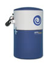
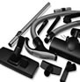
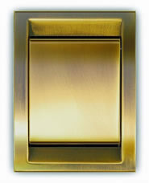
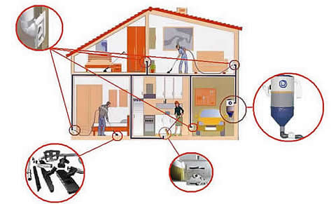

Nuestra experiencia en instalación de sistemas de aspiración centralizada, el deseo de apoyar la fabricación nacional y, sobre todo, nuestra máxima exigencia por ofrecer, a nuestros clientes, el mejor producto en tecnología y en relación calidad-precio nos ha llevado a elegir, para usted, la mejor oferta del mercado:
El sistema de aspiración centralizada SpiroClean, una exclusiva de FERMOVAC Tecnologías S.L. que DOMUS OPTIMA pone a su alcance en Canarias.
DOMUS OPTIMA comercializa e instala el sistema de aspiración centralizada SpiroClean y le ofrece, además, servicio técnico y de mantenimiento
Vea aquí los catálogos:
|  |  |  |
La Aspiracion Centralizada
Inventado por los americanos y desarrollado hace más de 60 años por los canadienses, el sistema de ASPIRACIÓN CENTRAL, no entro en Europa hasta finales de los 70. Gracias a su técnica semi-industrial la aspiración centralizada elimina los inconvenientes más molestos e insalubres de una aspiradora convencional:
- Falta de maniobrabilidad
- Ruido
- Olores molestos
- Problemas de mantenimiento
- Devolución de ácaros y polvo al ambiente
- Cable (220 voltios) arrastrado por el suelo ...
¡No se desespere arrastrando su aspiradora!
Funcionamiento
Este sistema se apoya en un funcionamiento muy sencillo. Se trata de separar espacialmente la central de aspiración de la manguera flexible y unirlas a través de un sistema “invisible” de tuberías con tomas, repartidas estratégicamente por la casa, en sus extremos.
Mas información y ventajas de sistema despues de la imagen...

La central de aspiración, lo que sería el ensamblaje de motor + filtro + deposito de polvo en un aspirador clásico, se instala en un lugar secundario de la vivienda, taller u oficina, como son el sótano, garaje, buhardilla, trastero, solana etc. El sistema de conexión “invisible” está compuesto por tuberías de 50 mm de diámetro, fabricadas en PVC vitrificado y antiestático. En sus extremos se sitúan las tomas de aspiración donde conectaremos la manguera para limpiar. Para optimizar el confort en un futuro próximo, estas tomas de limpieza, serán tan normales, como las de agua, electricidad, teléfono o TV.
Para utilizarla sólo tenemos que conectar la manguera, en alguna de las tomas de la casa, y accionar el cómodo interruptor de la empuñadura. El polvo, mezclado con el aire, será transportado a través de los tubos hasta la central de aspiración quedando almacenado hasta que queramos vaciarlo. La capacidad de este depósito es mucho mayor que la de cualquier aspirador tradicional y no necesitamos las molestas bolsas especiales. Vd. Podrá enchufarlo en cualquier habitación que disponga de una toma.
Para mayor comodidad, si usted quiere, puede elegir nuestras centrales especialmente diseñadas para la descarga automática. No tendrá que vaciar el depósito pues este se vacía automáticamente en el desagüe instalado para ello.
Ventajas
Higiene, al ser toda la suciedad transportada a un lugar alejado. Las aspiradoras tradicionales pierden parte de lo aspirado por aire de escape, con lo que revierten en el ambiente parte de las micropartículas de polvo. Esta situación no se da con los sistemas de aspiración centralizada que eliminan por completo la suciedad.
Saludable, al desplazar la masa de aire “sucio” fuera de la estancia, provoca el desplazamiento de aire colindante para que ocupe su lugar, generando así, un circuito de aireación que favorece la ventilación del hogar. Elimina completamente la recirculación de aire sucio dentro de su hogar, así como ácaros y otros elementos nocivos para la salud de su familia
Comodidad y Seguridad, al no tener que desplazar elementos pesados y grandes, así como cables que se retuercen entre muebles, puertas, escaleras, etc.., tampoco hay cables eléctricos sujetos a posibles derivaciones peligrosas o cortocircuitos de tensiones elevadas con que tropezarse.
Protección para sus muebles, al evitar rozaduras y golpes en muebles, paredes y zócalos
Más Potencia, es hasta tres veces más potente que una aspiradora convencional, con la ventaja que ello supone, no sólo en términos de eficiencia y rapidez (obtendrá limpieza superior en menos tiempo) sino también en su salud, ya que literalmente “arranca” los alérgenos (ácaros) de la superficie de suelos y mobiliario, eliminándolos por completo de la estancia.
Perdurabilidad, los motores tienen una vida útil muy superior a la de cualquier aspirador actual (¿cuantos aspiradores ha comprado en los últimos años para su vivienda..?), garantizando el mismo caudal de aspiración a lo largo de toda la vida útil, sin las perdidas de potencia ni el deterioro de las aspiradoras convencionales.
Revalorización de su Vivienda, al ser una instalación propia debe considerarse como una inversión, de igual manera que los sistemas de calefacción central, la insonorización o los circuitos de televisión vía satélite por ejemplo. No lo dude... ¡su vivienda valdrá más!